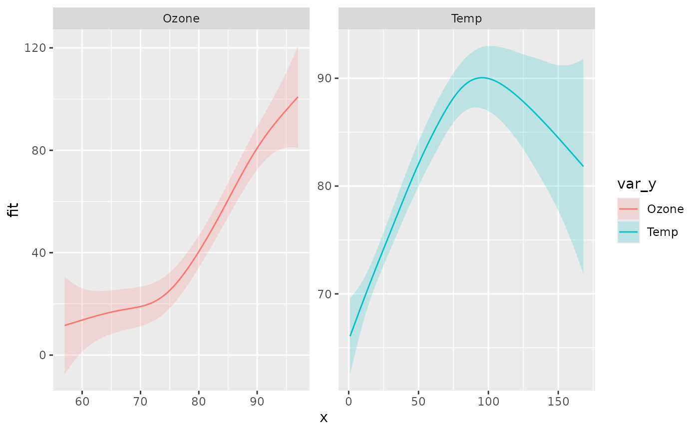

![[Experimental]](figures/lifecycle-experimental.svg)
Returns the curves a janusplot_fit() object stores, one row per grid
point of every directed cell, for drawing with ggplot2 or any other
tool. The fitted curves come with their 95 percent band; the
derivative curves, when the fit computed them, with theirs. Nothing is
refitted.
Usage
janusplot_curves(fit, x = NULL, y = NULL, what = c("fit", "d1", "d2"))Arguments
- fit
A
janusplot_fitobject fromjanusplot_fit().- x, y
Two variable names of
fit$varsto return both directions of that pair only, orNULL(the default) for every pair.- what
"fit"(the default) for the fitted curves,"d1"or"d2"for the first or second derivative, which need that order infit$settings$derivatives.
Value
A data frame with columns var_x, var_y, position, x,
fit, se (on the link scale), lo and hi, one row per grid
point of each directed cell.
Details
A cell var_y ~ s(var_x) is identified by var_x and var_y, and by
position as in summary(): "upper" when var_y comes first in
fit$vars. The fitted curve is on the response scale and its band is
mapped from the link scale, as in the plots. Under adjust with the
identity link, the curve is averaged over the adjustment covariates
(see janusplot_fit()). Cells that failed to fit have no rows.
See also
summary.janusplot_fit() for the per-cell numbers.
Other smooth-associations:
janusplot(),
janusplot_compare(),
janusplot_direction(),
janusplot_fit(),
janusplot_pair(),
janusplot_reference(),
janusplot_style(),
plot.janusplot_compare(),
plot.janusplot_fit()
Examples
fit <- janusplot_fit(airquality[, c("Ozone", "Temp", "Wind")],
engine = "gam")
curves <- janusplot_curves(fit, "Temp", "Ozone")
head(curves)
#> var_x var_y position x fit se lo hi
#> 1 Ozone Temp lower 1.000000 66.07074 1.802417 62.53800 69.60347
#> 2 Ozone Temp lower 1.839196 66.36484 1.715283 63.00289 69.72680
#> 3 Ozone Temp lower 2.678392 66.65887 1.630024 63.46402 69.85372
#> 4 Ozone Temp lower 3.517588 66.95274 1.547007 63.92061 69.98487
#> 5 Ozone Temp lower 4.356784 67.24638 1.466618 64.37180 70.12095
#> 6 Ozone Temp lower 5.195980 67.53968 1.389277 64.81670 70.26266
# Both directions of the pair on shared axes.
library(ggplot2)
ggplot(curves, aes(x, fit, colour = var_y)) +
geom_ribbon(aes(ymin = lo, ymax = hi, fill = var_y), alpha = 0.2,
colour = NA) +
geom_line() +
facet_wrap(~ var_y, scales = "free")
